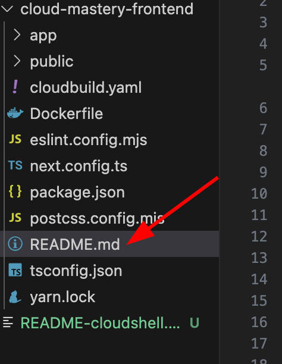

7. Deploy the Frontend and Access Your Application¶
This is the final step where everything comes together. We will trigger the deployment for our frontend application the same way we did for the backend. Once the pipeline succeeds, we will access the public URL to see our live, fully-functional dashboard.
Trigger the Frontend Deployment¶
Let's make a final code push to trigger the frontend build pipeline.
-
In the Cloud Shell Editor's EXPLORER pane, you will see the
cloud-mastery-frontenddirectory.
-
Expand the
cloud-mastery-frontendfolder and click on itsREADME.mdfile to open it.  -
Make a small change to this file, just as you did for the backend. When you're done, return to the Cloud Shell terminal.
-
Now, run the following commands to push your change to GitHub.
Just Like Before
This process is identical to what we did for the backend. We navigate to the correct folder, add our changes, commit them, and push to the
masterbranch to trigger our build.Your push will now trigger the# IMPORTANT: Navigate to the frontend directory first! cd ~/cloud-mastery-frontend # Add, commit, and push the changes git add . git commit -m "Deploy frontend application" git push origin mastercloud-mastery-frontend-deploypipeline.
Monitor the Build and Verify Deployment¶
-
Navigate back to the Cloud Build History page in the Google Cloud Console. You will see the new build for the frontend running.
Faster Build Time
You'll notice this build completes much faster than the backend build, as it doesn't involve database migrations.

-
Once the build shows a green Successful status, your frontend is officially deployed!

Access Your Live Application¶
This is the moment of truth! Let's view the live application.
-
In the Google Cloud Console, navigate to the Cloud Run page.
-
Click on the
cloud-mastery-frontendservice to open its details. -
At the top of the service details page, you'll find the application's public URL. Click on it to open your dashboard in a new tab.

-
Behold your fully deployed application dashboard!

Congratulations! Project Complete!
You have successfully built and deployed a full-stack, database-driven application on Google Cloud using modern, automated practices.
Throughout this lab, you have accomplished a great deal:
- Prepared a Google Cloud environment and mastered the Cloud Shell.
- Provisioned and populated a managed Cloud SQL database.
- Forked repositories and configured GitHub with SSH for secure access.
- Built two separate CI/CD pipelines with Cloud Build for automated deployments.
- Passed secrets securely to the build process using substitution variables.
- Deployed both backend and frontend containerized services to Cloud Run.